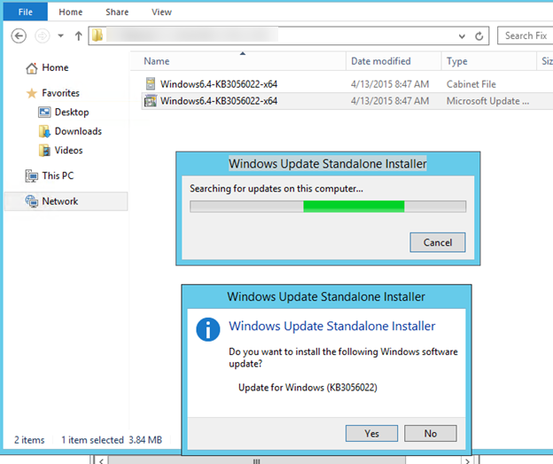

Continue to use Windows Server Technical Preview 1 (OCT 2014)
In this blog post we will look at how we can continue to use Windows Server Technical Preview and extend its expiry date till 1st OCT 2015.
At the moment when we login to Server Technical Preview before applying the hotfix, we get following message (I have another blog post earlier regarding this http://nirmalt.com/2015/04/04/this-build-of-windows-will-expire-soon-windows-server-technical-preview/)
Checking on Windows Version (winver)
Microsoft recently released a hotfix which will extend the time duration of Windows Server Technical Preview.
Hotfix can be obtained from link below
http://www.microsoft.com/en-us/download/details.aspx?id=46447
Once you obtain the fix, you can go ahead use the .msu package and apply the update. If it’s a Hyper-V Server or Server Core version then you cannot apply .msu package and the update needs to be applied using DISM command.
Example : dism /online /add-package /packagepath:Windows6.4-KB3056022-x64.cab

Once it completes, it will request to reboot
After restarting, you will notice that you will not see the expiry warning message anymore after logging to the system. However if check Windows Version (WinVer), you will notice that it still says it’s set to expire on 16th April 2015. we need to have another reboot in order to fix this
If it’s still not updated and if you are also getting a message saying it’s going to expire on 15th April when logging in to Windows, following procedure needs to be followed. This is the case mostly for Physical Servers running Technical Preview. however for Virtual Machine you don’t need to follow below process, and just applying the hotfix will extend the evaluation version till 1st OCT 2015.
Obtain a Windows Server Technical Preview Product Key
Visit http://www.microsoft.com/en-us/evalcenter/evaluate-windows-server-technical-preview and navigate to Preinstall info. You will be able to locate Windows Server Technical Preview product key from this location
Open Server Manager and click on Local Server -> Not Activated, which will open up “Activation Window”. First step is to provide the Product Key
Sometimes you will notice that the activation didn’t complete successfully. If that’s the case, you need to run slmgr /ato to activate the product.
Open PowerShell as an Administrator and run slmgr /ato
Make sure that there’s internet connectivity and within few seconds you will receive following message confirming that the product is now activated.
Restart your Server Preview and you should not see expiry message anymore.
I also created a step by step youtube video on how to apply the hotfix